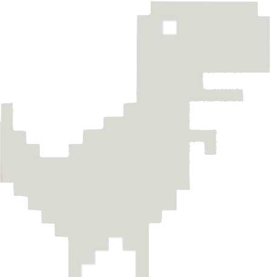
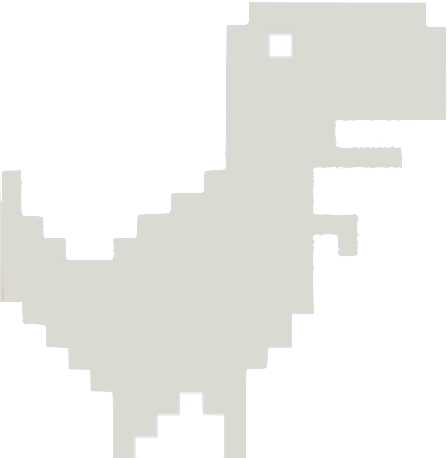
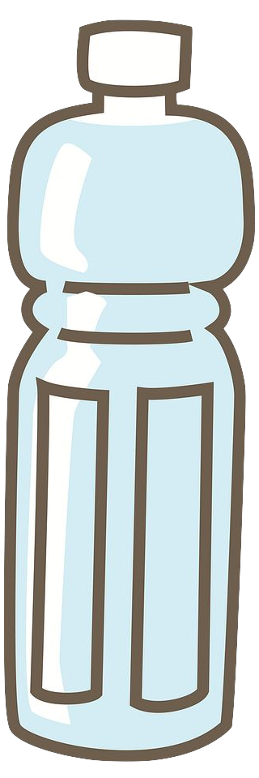
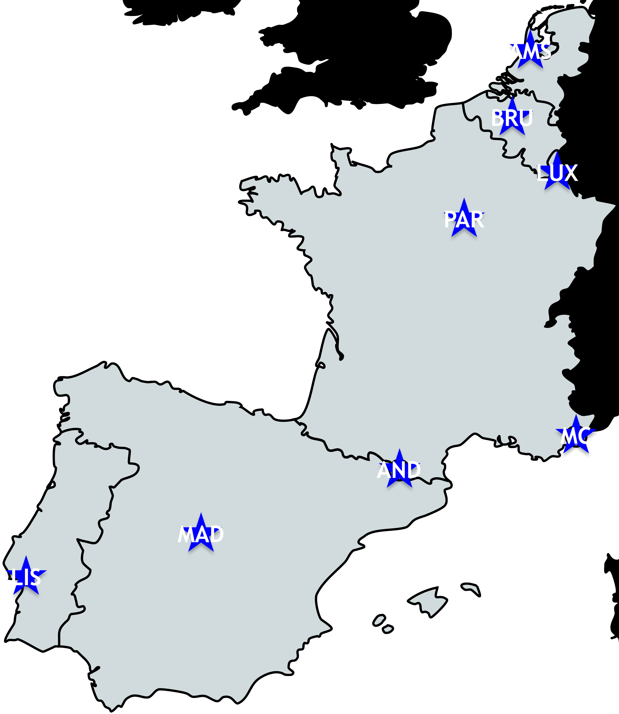
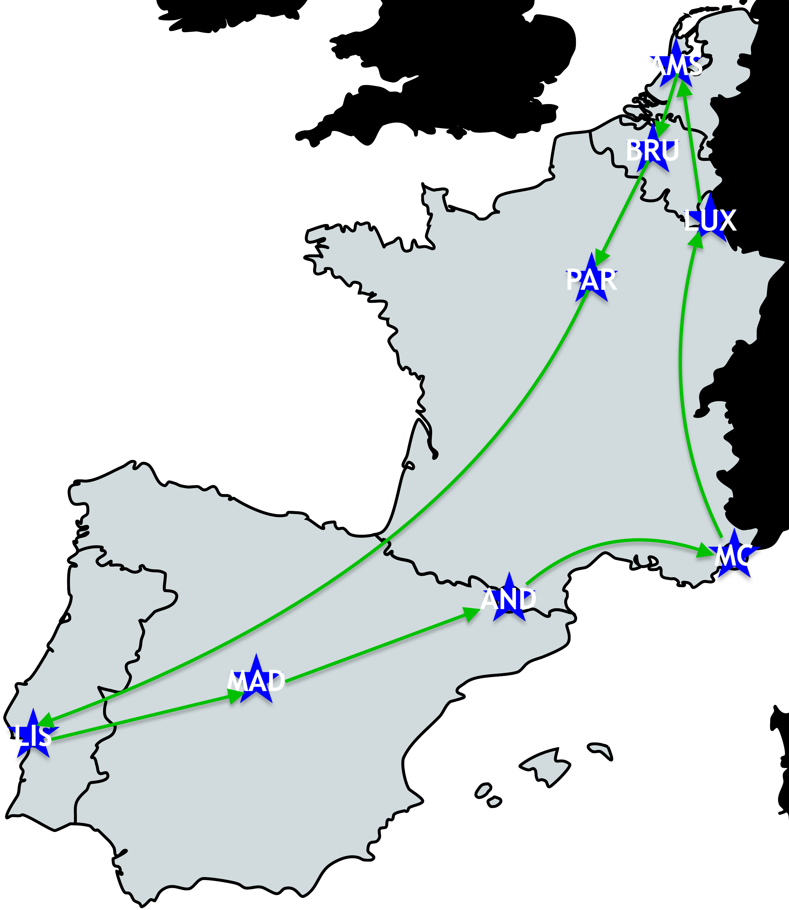
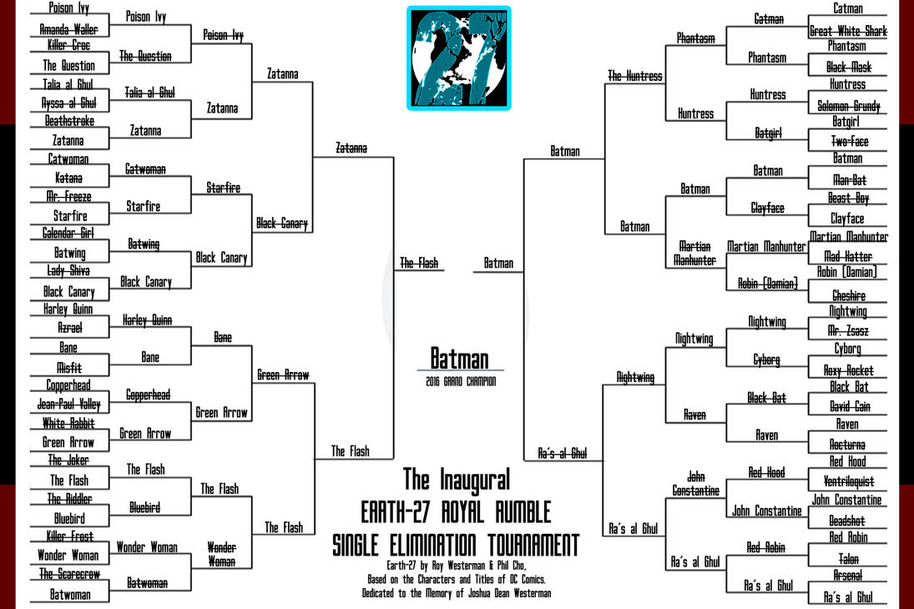
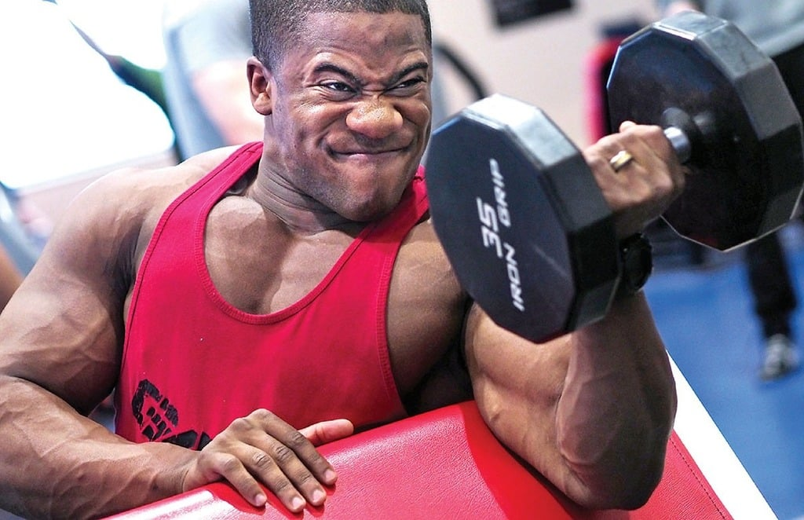

Tight Genes:
Intro to Genetic Algorithms
by Dave Aronson
T.Rex-20@Codosaur.ustwitter.com/DaveAronson
linkedin.com/in/DaveAronson
github.com/CodosaurusLLC/tight-genes
¡Hola, Málaga!
Hallo, Utrecht!
Sveiki, Vilniau!
Γεια σας, Αθήνα!
Hei, Oslo!
Olá, Coimbra!
üëã
(Hello, !)
Aš esu Dave Aronson,
Me llamo
Ik ben
Είμαι ο
Jeg er
Eu sou

(I'm Dave Aronson,)
T. Reksas iš Codosaurus,
el T. Rex de Codosaurus,
de T. Rex van Codosaurus,
ο T. Rex του Codosaurus,
T. Rex fra Codosaurus,
o T. Rex de Codosaurus,

(the T. Rex of Codosaurus,)
ir atskridau čia
y volé hasta aquí
en ik ben hierheen gevlogen
και πέταξα εδώ
og jeg fløy hit
e voei para cá
üõ´ . . . üõ¨
(and I flew here)
ant savo augintinio pterodaktilio
en mi mascota pterodáctila
op mijn pterodactylus
με το κατοικίδιο μου πτεροδάκτυλο
på kjæledyret mitt pterodactyl
no meu pterodátilo de estimação
 

(on my pet pterodactyl)
kad išmokinčiau jus apie
para enseñaros sobre
om jullie iets over
για να σας μάθω τους
for å lære deg om
para vos ensinar sobre
üë®üèΩ‚Äçüè´
(to teach you about)
Genetiniai Algoritmai.
Algoritmos Genéticos.
Genetische Algoritmen te leren.
Γενετικούς Αλγόριθμους.
Genetiske Algoritmer.
Algoritmos Genéticos.
(Genetic Algorithms.)
Visgi
Pero
Maar
Αλλά
Men
Mas
. . .
☝️
(But . . .)
toliau tesiu pasakojima angliškai.
lo haré en inglés.
ik zal het in het Engels doen.
θα το κάνω στα αγγλικά.
jeg skal gjøre det på engelsk.
vou fazê-lo em inglês.
üá∫üá∏
(I will do it in English.)
WAT?!
Optimization Heuristic:
shortcut to find
"good enough" solutions
(ideally the best,
but OK if not).
shortcut to find
"good enough" solutions
(ideally the best,
but OK if not).
Alan
Turing
Turing


ST5 antenna,
and
US quarter
for scale
and
US quarter
for scale
? ? ?
how_many = 10 # or however big we want
pop = initial_pop(how_many)
evaluate(pop)
while not done?(pop)
breeders = select_breeders(pop)
pop = breed(breeders, how_many)
mutate(pop)
evaluate(pop)
end
Initialize
⬇️
Assess
⬅️
Done?
⬇️
Select
➡️
Breed
⬆️
Mutate
⬅️
01001000
01100101
01101100
01101100
01101111
00100000
01110111
01101111
01110010
01101100
01100100
00100001

Knapsack /
Rucksack /
Backpack /
Whatever!
Rucksack /
Backpack /
Whatever!

üßëüèΩ‚Äçüåæ
üöö
üêÑ üêÑ üêÑ üêÑ
üêÑ üêÑ üêÑ
üêÑ
ü•õ
üßÄ
üßà
üç®
ü•©
| What | Unit | Qty | Pounds | Value |
|---|---|---|---|---|
| Cow | cow | 1 | 1,500 | $2,000 |
| Milk | 1-gal jug | 200 | 1,720 | $800 |
| Cheese | 5-lb wheel | 200 | 1,000 | $12,000 |
| Butter | 1-lb block | 1,000 | 1,000 | $3,000 |
| Ice Cream | 1-gal tub | 200 | 1,000 | $2,000 |
| Meat | side | 4 | 1,280 | $8,000 |
| Leather | hide | 20 | 1,100 | $6,000 |
| TOTAL WEIGHT: | 8,600 | |||
class Truckload
attr_reader :contents
def initialize()
@contents = rand(128)
end
end
def self.initial_population(how_many)
population = []
for i in 1..how_many
population.append(self.new)
end
return population
end
| Cow | Milk | Cheese | Butter | Ice Cream | Meat | Leather |
|---|---|---|---|---|---|---|
| Y | N | N | Y | N | Y | Y |
| N | N | N | Y | Y | N | N |
| N | Y | N | N | N | Y | N |
| N | Y | Y | N | Y | N | N |
| Y | Y | Y | N | Y | Y | N |
| Y | Y | N | Y | N | N | N |
| Y | N | N | Y | N | Y | N |
| Y | Y | N | N | N | N | N |
| N | N | Y | Y | Y | Y | Y |
| N | N | Y | N | N | Y | N |
class Truckload
class Item
attr_reader :name, :weight, :value
def initialize(name, weight, value)
@name = name
@weight = weight
@value = value
end
end
ITEMS = [
Item.new("Cow", 1500, 2000),
Item.new("Milk", 1720, 800),
Item.new("Cheese", 1000, 12000),
Item.new("Butter", 1000, 3000),
Item.new("Ice Cream", 1000, 2000),
Item.new("Meat", 1280, 8000),
Item.new("Leather", 1100, 6000)
]
Initialize
⬇️
Assess
⬅️
Done?
⬇️
Select
➡️
Breed
⬆️
Mutate
⬅️
↑
def fitness()
items = (0...ITEMS.count).
select { |idx| bit_on?(idx) }.
map { |idx| ITEMS[idx] }
weight = items.map(&:weight).sum
if weight > 4000
return 0
else
return items.map(&:value).sum
end
end
| Cow | Milk | Cheese | Butter | Ice Cream | Meat | Leather | Fitness |
|---|---|---|---|---|---|---|---|
| N | N | Y | N | N | Y | N | 20,000 |
| N | Y | Y | N | Y | N | N | 14,800 |
| Y | N | N | Y | N | Y | N | 13,000 |
| N | Y | N | N | N | Y | N | 8,800 |
| N | N | N | Y | Y | N | N | 5,000 |
| Y | Y | N | N | N | N | N | 2,800 |
| Y | N | N | Y | N | Y | Y | 0 |
| Y | Y | Y | N | Y | Y | N | 0 |
| Y | Y | N | Y | N | N | N | 0 |
| N | N | Y | Y | Y | Y | Y | 0 |
Initialize
⬇️
Assess
⬅️
Done?
⬇️
Select
➡️
Breed
⬆️
Mutate
⬅️
↑
@@best_combo = self.new(0)
@@generations = 0
def self.done?(population)
@@generations += 1
better = population.
select { |c| c.fitness > @@best_combo.fitness }
if better.any?
@@best_combo = better.sort_by(&:fitness).last
@@generations = 0
return false
else
return @@generations >= 100
end
end
Initialize
⬇️
Assess
⬅️
Done?
⬇️
Select
➡️
Breed
⬆️
Mutate
⬅️
↑
def self.select_breeders(population)
return population.
sort_by(&:fitness).
reverse.
take(2)
end
| Cow | Milk | Cheese | Butter | Ice Cream | Meat | Leather | Fitness |
|---|---|---|---|---|---|---|---|
| N | N | Y | N | N | Y | N | 20,000 |
| N | Y | Y | N | Y | N | N | 14,800 |
Initialize
⬇️
Assess
⬅️
Done?
⬇️
Select
➡️
Breed
⬆️
Mutate
⬅️
↑
def self.breed(p1, p2)
cross_point = rand(ITEMS.count + 1)
list = (0..ITEMS.count).
map { |index|
parent = index < cross_point ? p1 : p2
parent.contents & (1 << index)
}.
sum
return self.new(list)
end
| Cow | Milk | Cheese | Butter | Ice Cream | Meat | Leather |
|---|---|---|---|---|---|---|
| N | N | Y | N | N | Y | N |
| + | ||||||
| N | Y | Y | N | Y | N | N |
| = | ||||||
| N | N | Y | N | Y | N | N |
def self.new_population(p1, p2, how_many)
population = []
for i in 1..how_many
population.append(self.breed(p1, p2))
end
return population
end
| Cow | Milk | Cheese | Butter | Ice Cream | Meat | Leather |
|---|---|---|---|---|---|---|
| N | N | Y | N | Y | N | N |
| N | Y | Y | N | Y | N | N |
| N | N | Y | N | Y | N | N |
| N | N | Y | N | N | Y | N |
| N | N | Y | N | Y | N | N |
| N | N | Y | N | Y | N | N |
| N | N | Y | N | N | N | N |
| N | N | Y | N | Y | N | N |
| N | N | Y | N | Y | N | N |
| N | N | Y | N | N | Y | N |
Initialize
⬇️
Assess
⬅️
Done?
⬇️
Select
➡️
Breed
⬆️
Mutate
⬅️
↑
def maybe_mutate()
(0..ITEMS.count).each do |index|
if rand(4) == 0
@contents ^= (1 << index)
end
end
end
| Cow | Milk | Cheese | Butter | Ice Cream | Meat | Leather |
|---|---|---|---|---|---|---|
| N | Y | N | Y | N | N | Y |
| N | N | Y | Y | N | N | N |
| Y | N | Y | Y | Y | Y | N |
| Y | Y | Y | Y | Y | Y | N |
| Y | Y | Y | Y | N | N | Y |
| N | Y | N | Y | N | N | Y |
| Y | Y | N | Y | N | N | Y |
| N | N | Y | N | Y | N | N |
| Y | N | N | Y | Y | N | N |
| N | N | Y | N | Y | N | N |
Initialize
⬇️
Assess
⬅️
Done?
⬇️
Select
➡️
Breed
⬆️
Mutate
⬅️
↑
| Cow | Milk | Cheese | Butter | Ice Cream | Meat | Leather | Fitness |
|---|---|---|---|---|---|---|---|
| N | N | Y | Y | N | N | N | 15,000 |
| N | N | Y | N | Y | N | N | 14,000 |
| N | N | Y | N | Y | N | N | 14,000 |
| N | Y | N | Y | N | N | Y | 9,800 |
| N | Y | N | Y | N | N | Y | 9,800 |
| Y | N | N | Y | Y | N | N | 7,000 |
| Y | Y | Y | Y | N | N | Y | 0 |
| Y | Y | Y | Y | Y | Y | N | 0 |
| Y | N | Y | Y | Y | Y | N | 0 |
| Y | Y | N | Y | N | N | Y | 0 |
| Cow | Milk | Cheese | Butter | Ice Cream | Meat | Leather | Fitness |
|---|---|---|---|---|---|---|---|
| N | Y | Y | N | N | Y | N | 20,800 |
| N | N | Y | N | N | Y | N | 20,000 |
| N | N | Y | N | N | Y | N | 20,000 |
| N | N | N | N | N | Y | Y | 14,000 |
| N | N | Y | N | N | N | N | 12,000 |
| N | Y | N | N | Y | N | N | 2,800 |
| Y | N | Y | Y | N | Y | N | 0 |
| Y | Y | Y | N | Y | Y | N | 0 |
| N | Y | Y | N | Y | Y | N | 0 |
| N | Y | Y | Y | N | Y | N | 0 |
| Cow | Milk | Cheese | Butter | Ice Cream | Meat | Leather | Fitness |
|---|---|---|---|---|---|---|---|
| N | N | Y | N | N | Y | Y | 26,000 |
| N | N | Y | Y | N | N | Y | 21,000 |
| N | Y | N | N | Y | Y | N | 10,800 |
| Y | N | N | N | N | N | Y | 8,000 |
| N | N | N | N | N | Y | N | 8,000 |
| N | N | N | Y | Y | N | N | 5,000 |
| N | Y | N | N | N | N | N | 8,00 |
| N | Y | N | N | N | N | N | 8,00 |
| Y | Y | N | Y | N | N | Y | 0 |
| Y | Y | N | Y | Y | Y | Y | 0 |


|
To
From |
AND | BRU | LIS | LUX | MAD | MTC | PAR |
|---|---|---|---|---|---|---|---|
| AMS | 1357 | 210 | 2233 | 417 | 1773 | 1421 | 502 |
| AND | - | 1162 | 1232 | 1178 | 613 | 653 | 862 |
| BRU | - | - | 2038 | 213 | 1577 | 1200 | 307 |
| LIS | - | - | - | 2153 | 625 | 1838 | 1739 |
| LUX | - | - | - | - | 1691 | 1041 | 386 |
| MAD | - | - | - | - | - | 1288 | 1278 |
| MTC | - | - | - | - | - | - | 956 |
Initialize
⬇️
Assess
⬅️
Done?
⬇️
Select
➡️
Breed
⬆️
Mutate
⬅️
class Route
CITIES = %w(AMS AND BRU LIS LUX MAD MTC PAR)
attr_reader :stops
def initialize(stops=CITIES.shuffle)
@stops = stops
end
end
| 1st | 2nd | 3rd | 4th | 5th | 6th | 7th | 8th |
|---|---|---|---|---|---|---|---|
| AND | MAD | AMS | LUX | PAR | BRU | MTC | LIS |
| MTC | PAR | LUX | AND | MAD | LIS | AMS | BRU |
| MAD | LUX | BRU | AMS | LIS | AND | MTC | PAR |
| AND | PAR | LUX | BRU | AMS | LIS | MAD | MTC |
| LIS | LUX | MTC | AMS | AND | BRU | PAR | MAD |
| BRU | LUX | LIS | PAR | AND | MAD | MTC | AMS |
| AND | LUX | PAR | MTC | BRU | MAD | AMS | LIS |
| LUX | BRU | AND | MAD | PAR | LIS | AMS | MTC |
| AND | AMS | MTC | PAR | LIS | BRU | LUX | MAD |
| PAR | MAD | AMS | BRU | AND | MTC | LIS | LUX |
Initialize
⬇️
Assess
⬅️
Done?
⬇️
Select
➡️
Breed
⬆️
Mutate
⬅️
↑
def fitness = -total_distance
def total_distance
stops.
each_cons(2).
to_a.
map { |src, dst| distance(src, dst) }.
sum +
distance(stops.first, stops.last)
end
DISTANCES = {
"AMS" => {
"AND" => 1357, "BRU" => 210, "LIS" => 2233, "LUX" => 417,
"MAD" => 1773, "MTC" => 1421, "PAR" => 502
},
"AND" => {
"BRU" => 1162, "LIS" => 1232, "LUX" => 1178,
"MAD" => 613, "MTC" => 653, "PAR" => 862
},
"BRU" => {
"LIS" => 2038, "LUX" => 213, "MAD" => 1577,
"MTC" => 1200, "PAR" => 307
},
"LIS" => { "LUX" => 2153, "MAD" => 625, "MTC" => 1838, "PAR" => 1739 },
"LUX" => { "MAD" => 1691, "MTC" => 1041, "PAR" => 386 },
"MAD" => { "MTC" => 1288, "PAR" => 1278 },
"MTC" => { "PAR" => 956 },
}
def distance(src, dst)
src, dst = dst, src if src > dst
DISTANCES[src][dst]
end
| 1st | 2nd | 3rd | 4th | 5th | 6th | 7th | 8th | Fit |
|---|---|---|---|---|---|---|---|---|
| AND | PAR | LUX | BRU | AMS | LIS | MAD | MTC | -6470 |
| MTC | PAR | LUX | AND | MAD | LIS | AMS | BRU | -7401 |
| AND | MAD | AMS | LUX | PAR | BRU | MTC | LIS | -7766 |
| MAD | LUX | BRU | AMS | LIS | AND | MTC | PAR | -8466 |
| BRU | LUX | LIS | PAR | AND | MAD | MTC | AMS | -8499 |
| LIS | LUX | MTC | AMS | AND | BRU | PAR | MAD | -9344 |
| PAR | MAD | AMS | BRU | AND | MTC | LIS | LUX | -9453 |
| LUX | BRU | AND | MAD | PAR | LIS | AMS | MTC | -9700 |
| AND | AMS | MTC | PAR | LIS | BRU | LUX | MAD | -10028 |
| AND | LUX | PAR | MTC | BRU | MAD | AMS | LIS | -10535 |
Initialize
⬇️
Assess
⬅️
Done?
⬇️
Select
➡️
Breed
⬆️
Mutate
⬅️
↑
@@best_route = nil
@@best_fitness = -100_000
@@generations = 0
def self.done?(population)
@@generations += 1
better = population.
select { |r| r.fitness > @@best_fitness }
if better.any?
@@best_route = better.sort_by(&:fitness).last
@@best_fitness = @@best_route.fitness
@@generations = 0
return false
else
return @@generations >= 100
end
end
Initialize
⬇️
Assess
⬅️
Done?
⬇️
Select
➡️
Breed
⬆️
Mutate
⬅️
↑
def self.select_breeders(pop)
total = -pop.map(&:fitness).sum
# set p2 = p1 so until-loop will start
p2 = p1 = pick_winner(pop, rand(total))
p2 = pick_winner(pop, rand(total)) until p2 != p1
[p1, p2]
end
def self.pick_winner(pop, num)
total = 0
pop.each do |p|
total -= p.fitness
return p if total > num
end
end
| 1st | 2nd | 3rd | 4th | 5th | 6th | 7th | 8th | Fit |
|---|---|---|---|---|---|---|---|---|
| MAD | LUX | BRU | AMS | LIS | AND | MTC | PAR | -8466 |
| LUX | BRU | AND | MAD | PAR | LIS | AMS | MTC | -9700 |
Initialize
⬇️
Assess
⬅️
Done?
⬇️
Select
➡️
Breed
⬆️
Mutate
⬅️
↑
def self.breed(p1, p2)
xover = rand(CITIES.length + 1)
cities = []
cities[0 .. (xover - 1)] =
p1.stops.slice(0, xover)
cities[xover .. (CITIES.length - 1)] =
p2.stops.reject { |city| cities.member?(city) }
return Route.new(cities)
end
| 1st | 2nd | 3rd | 4th | 5th | 6th | 7th | 8th |
|---|---|---|---|---|---|---|---|
| MAD | LUX | BRU | AMS | LIS | AND | MTC | PAR |
| + | |||||||
| LUX | BRU | AND | MAD | PAR | LIS | AMS | MTC |
| = | |||||||
| MAD | LUX | BRU | AND | PAR | LIS | AMS | MTC |
| 1st | 2nd | 3rd | 4th | 5th | 6th | 7th | 8th |
|---|---|---|---|---|---|---|---|
| MAD | LUX | BRU | AND | PAR | LIS | AMS | MTC |
| MAD | LUX | BRU | AND | PAR | LIS | AMS | MTC |
| MAD | LUX | BRU | AND | PAR | LIS | AMS | MTC |
| LUX | BRU | AND | MAD | PAR | LIS | AMS | MTC |
| MAD | LUX | BRU | AMS | AND | PAR | LIS | MTC |
| MAD | LUX | BRU | AND | PAR | LIS | AMS | MTC |
| MAD | LUX | BRU | AND | PAR | LIS | AMS | MTC |
| MAD | LUX | BRU | AND | PAR | LIS | AMS | MTC |
| LUX | BRU | AND | MAD | PAR | LIS | AMS | MTC |
| LUX | BRU | AND | MAD | PAR | LIS | AMS | MTC |
Initialize
⬇️
Assess
⬅️
Done?
⬇️
Select
➡️
Breed
⬆️
Mutate
⬅️
↑
def mutate()
i1 = rand(CITIES.length)
i2 = rand(CITIES.length)
stops[i1], stops[i2] = [stops[i2], stops[i1]]
end
| 1st | 2nd | 3rd | 4th | 5th | 6th | 7th | 8th |
|---|---|---|---|---|---|---|---|
| BRU | LUX | MAD | AND | PAR | LIS | AMS | MTC |
| MAD | LUX | BRU | MTC | PAR | LIS | AMS | AND |
| MAD | LUX | BRU | AND | PAR | LIS | AMS | MTC |
| LUX | BRU | AND | MAD | PAR | LIS | AMS | MTC |
| MAD | LUX | BRU | AMS | AND | PAR | LIS | MTC |
| LIS | LUX | BRU | AND | PAR | MAD | AMS | MTC |
| AMS | LUX | BRU | AND | PAR | LIS | MAD | MTC |
| PAR | LUX | BRU | AND | MAD | LIS | AMS | MTC |
| LUX | BRU | MTC | MAD | PAR | LIS | AMS | AND |
| LUX | BRU | AND | PAR | MAD | LIS | AMS | MTC |
Initialize
⬇️
Assess
⬅️
Done?
⬇️
Select
➡️
Breed
⬆️
Mutate
⬅️
↑
| 1st | 2nd | 3rd | 4th | 5th | 6th | 7th | 8th | Fit |
|---|---|---|---|---|---|---|---|---|
| PAR | LUX | BRU | AND | MAD | LIS | AMS | MTC | -7609 |
| AMS | LUX | BRU | AND | PAR | LIS | MAD | MTC | -7727 |
| LUX | BRU | AND | PAR | MAD | LIS | AMS | MTC | -8835 |
| MAD | LUX | BRU | AMS | AND | PAR | LIS | MTC | -9198 |
| LUX | BRU | AND | MAD | PAR | LIS | AMS | MTC | -9700 |
| BRU | LUX | MAD | AND | PAR | LIS | AMS | MTC | -9972 |
| MAD | LUX | BRU | MTC | PAR | LIS | AMS | AND | -10002 |
| LUX | BRU | MTC | MAD | PAR | LIS | AMS | AND | -10486 |
| MAD | LUX | BRU | AND | PAR | LIS | AMS | MTC | -10609 |
| LIS | LUX | BRU | AND | PAR | MAD | AMS | MTC | -10700 |
| 1st | 2nd | 3rd | 4th | 5th | 6th | 7th | 8th | Fit | Gens |
|---|---|---|---|---|---|---|---|---|---|
| LIS | AND | MTC | LUX | PAR | BRU | AMS | MAD | -6227 | 22 |
| LUX | BRU | PAR | MTC | AND | MAD | LIS | AMS | -6017 | 18 |
| LIS | MAD | PAR | AMS | BRU | LUX | MTC | AND | -5754 | 26 |
| AMS | BRU | PAR | LIS | MAD | AND | MTC | LUX | -5605 | 100 |


STRength
INTelligence
DEXterity
CONstitution
WISdom
CHArisma
3d6 each
ignoring STR 18/xx
INTelligence
DEXterity
CONstitution
WISdom
CHArisma
3d6 each
ignoring STR 18/xx
class Character
attr_reader %i(str int dex con wis cha)
def initialize()
@str = roll(3, 6)
@int = roll(3, 6)
@dex = roll(3, 6)
@con = roll(3, 6)
@wis = roll(3, 6)
@cha = roll(3, 6)
end
end
| Str | Int | Dex | Con | Wis | Cha |
|---|---|---|---|---|---|
| 11 | 9 | 9 | 10 | 7 | 15 |
| 4 | 14 | 8 | 12 | 13 | 10 |
| 9 | 14 | 15 | 11 | 9 | 16 |
| 14 | 15 | 10 | 7 | 6 | 14 |
| 13 | 12 | 7 | 13 | 11 | 10 |
| 12 | 12 | 10 | 9 | 5 | 16 |
| 11 | 12 | 9 | 13 | 6 | 12 |
| 10 | 14 | 12 | 8 | 8 | 16 |
| 14 | 7 | 8 | 9 | 8 | 8 |
| 14 | 12 | 13 | 5 | 13 | 13 |
Initialize
⬇️
Assess
⬅️
Done?
⬇️
Select
➡️
Breed
⬆️
Mutate
⬅️
↑
def fitness()
str * 2 + con + dex / 2
end
def fitness()
stats = [str, con, dex, int, wis, cha]
(0..5).
map { |idx|
stats[idx] * (6 - idx)
}.
sum
end
def fitness()
stats = [str, con, dex, int, wis, cha]
(0..5).
map { |idx|
stats[idx] * 2 ** (5 - idx)
}.
sum
end
| Str | Int | Dex | Con | Wis | Cha | Fit |
|---|---|---|---|---|---|---|
| 13 | 12 | 7 | 13 | 11 | 10 | 760 |
| 14 | 15 | 10 | 7 | 6 | 14 | 726 |
| 14 | 12 | 13 | 5 | 13 | 13 | 719 |
| 14 | 7 | 8 | 9 | 8 | 8 | 708 |
| 11 | 12 | 9 | 13 | 6 | 12 | 703 |
| 12 | 12 | 10 | 9 | 5 | 16 | 682 |
| 9 | 14 | 15 | 11 | 9 | 16 | 674 |
| 11 | 9 | 9 | 10 | 7 | 15 | 649 |
| 10 | 14 | 12 | 8 | 8 | 16 | 632 |
| 4 | 14 | 8 | 12 | 13 | 10 | 476 |
Initialize
⬇️
Assess
⬅️
Done?
⬇️
Select
➡️
Breed
⬆️
Mutate
⬅️
↑
def Character.done?(population)
population.any? { |cand|
cand.fitness >= 1021
}
end
Initialize
⬇️
Assess
⬅️
Done?
⬇️
Select
➡️
Breed
⬆️
Mutate
⬅️
↑

[X] Alice [ ] Bob [X] Charlie [ ] Darlene [X] Edwina [ ] Felicity [ ] Georgette [X] Harry [ ] Ian [ ] Jackie

# in our main loop
breeders = self.select_breeders(pop, 4, 2)
def self.select_breeders(pop,
tourney_size,
num_breeders)
breeders = []
while breeders.count < num_breeders
breeders.append(run_tourney(pop - breeders,
tourney_size))
end
return breeders
end
def self.run_tourney(left, tourney_size)
return left.
sample(tourney_size).
sort(&:fitness).
last
end
| Str | Int | Dex | Con | Wis | Cha | Fit |
|---|---|---|---|---|---|---|
| 11 | 9 | 9 | 10 | 7 | 15 | 649 |
| 14 | 15 | 10 | 7 | 6 | 14 | 726 |
| 4 | 14 | 8 | 12 | 13 | 10 | 476 |
| 14 | 12 | 13 | 5 | 13 | 13 | 719 |
| Str | Int | Dex | Con | Wis | Cha | Fit |
|---|---|---|---|---|---|---|
| 4 | 14 | 8 | 12 | 13 | 10 | 476 |
| 11 | 9 | 9 | 10 | 7 | 15 | 649 |
| 14 | 12 | 13 | 5 | 13 | 13 | 719 |
| 14 | 15 | 10 | 7 | 6 | 14 | 726 |
| Str | Int | Dex | Con | Wis | Cha | Fit |
|---|---|---|---|---|---|---|
| 14 | 15 | 10 | 7 | 6 | 14 | 726 |
| 13 | 12 | 7 | 13 | 11 | 10 | 760 |
Initialize
⬇️
Assess
⬅️
Done?
⬇️
Select
➡️
Breed
⬆️
Mutate
⬅️
↑
def Character.breed(p1, p2)
char = Character.new
char.str = rand(2) == 1 ? p1.str : p2.str
char.int = rand(2) == 1 ? p1.int : p2.int
char.dex = rand(2) == 1 ? p1.dex : p2.dex
char.con = rand(2) == 1 ? p1.con : p2.con
char.wis = rand(2) == 1 ? p1.wis : p2.wis
char.cha = rand(2) == 1 ? p1.cha : p2.cha
end
| Str | Int | Dex | Con | Wis | Cha |
|---|---|---|---|---|---|
| 13 | 12 | 7 | 13 | 11 | 10 |
| + | |||||
| 14 | 15 | 10 | 7 | 6 | 14 |
| = | |||||
| 13 | 15 | 10 | 13 | 6 | 10 |
| Str | Int | Dex | Con | Wis | Cha |
|---|---|---|---|---|---|
| 13 | 12 | 10 | 7 | 6 | 14 |
| 13 | 12 | 7 | 13 | 6 | 14 |
| 14 | 12 | 10 | 13 | 11 | 14 |
| 14 | 15 | 7 | 13 | 6 | 14 |
| 13 | 12 | 10 | 13 | 6 | 14 |
| 14 | 15 | 10 | 7 | 11 | 10 |
| 14 | 12 | 10 | 13 | 6 | 10 |
| 13 | 15 | 10 | 13 | 6 | 14 |
| 13 | 15 | 10 | 13 | 6 | 10 |
| 14 | 12 | 7 | 7 | 6 | 14 |
Initialize
⬇️
Assess
⬅️
Done?
⬇️
Select
➡️
Breed
⬆️
Mutate
⬅️
↑
def maybe_mutate()
@str = maybe_mutate_stat(@str)
@int = maybe_mutate_stat(@int)
@dex = maybe_mutate_stat(@dex)
@con = maybe_mutate_stat(@con)
@wis = maybe_mutate_stat(@wis)
@cha = maybe_mutate_stat(@cha)
end
def maybe_mutate_stat(stat)
(stat + rand(3) - 1).clamp(3, 18)
end
| Str | Int | Dex | Con | Wis | Cha |
|---|---|---|---|---|---|
| 14 | 12 | 10 | 7 | 7 | 13 |
| 12 | 13 | 7 | 14 | 6 | 14 |
| 13 | 12 | 10 | 14 | 11 | 15 |
| 15 | 16 | 7 | 14 | 6 | 15 |
| 13 | 11 | 10 | 12 | 5 | 15 |
| 13 | 15 | 11 | 7 | 11 | 10 |
| 14 | 13 | 9 | 12 | 6 | 9 |
| 14 | 15 | 9 | 13 | 6 | 15 |
| 13 | 15 | 11 | 12 | 5 | 9 |
| 13 | 12 | 6 | 6 | 7 | 13 |
Initialize
⬇️
Assess
⬅️
Done?
⬇️
Select
➡️
Breed
⬆️
Mutate
⬅️
↑
| Str | Int | Dex | Con | Wis | Cha | Fit |
|---|---|---|---|---|---|---|
| 15 | 16 | 7 | 14 | 6 | 15 | 851 |
| 14 | 15 | 9 | 13 | 6 | 15 | 815 |
| 13 | 12 | 10 | 14 | 11 | 15 | 805 |
| 14 | 13 | 9 | 12 | 6 | 9 | 785 |
| 13 | 15 | 11 | 12 | 5 | 9 | 775 |
| 13 | 11 | 10 | 12 | 5 | 15 | 757 |
| 12 | 13 | 7 | 14 | 6 | 14 | 742 |
| 14 | 12 | 10 | 7 | 7 | 13 | 715 |
| 13 | 15 | 11 | 7 | 11 | 10 | 708 |
| 13 | 12 | 6 | 6 | 7 | 13 | 635 |
| Str | Int | Dex | Con | Wis | Cha | Fit |
|---|---|---|---|---|---|---|
| 18 | 18 | 9 | 18 | 4 | 13 | 1029 |
| 18 | 17 | 7 | 18 | 6 | 14 | 1014 |
| 18 | 16 | 8 | 18 | 3 | 13 | 1011 |
| 18 | 15 | 7 | 18 | 3 | 13 | 999 |
| 18 | 16 | 8 | 17 | 4 | 13 | 997 |
| 18 | 16 | 6 | 18 | 3 | 15 | 997 |
| 17 | 18 | 8 | 18 | 6 | 13 | 993 |
| 17 | 16 | 9 | 18 | 3 | 14 | 988 |
| 18 | 16 | 6 | 17 | 3 | 13 | 979 |
| 17 | 16 | 8 | 17 | 4 | 12 | 964 |
def fitness()
# below is the only line that changed!
stats = [int, wis, dex, con, cha, str]
(0..5).
map { |idx| stats[idx] * 2 ** (5 - idx) }.
sum
end
| Str | Int | Dex | Con | Wis | Cha | Fit |
|---|---|---|---|---|---|---|
| 12 | 18 | 17 | 12 | 15 | 18 | 1048 |
| 14 | 18 | 16 | 9 | 15 | 16 | 1026 |
| 15 | 18 | 15 | 10 | 15 | 16 | 1023 |
| 13 | 18 | 17 | 11 | 13 | 18 | 1013 |
| 14 | 18 | 17 | 10 | 13 | 18 | 1010 |
| 13 | 18 | 16 | 8 | 14 | 18 | 1009 |
| 12 | 17 | 16 | 11 | 15 | 17 | 1002 |
| 12 | 18 | 15 | 9 | 14 | 16 | 1000 |
| 14 | 17 | 16 | 10 | 15 | 16 | 998 |
| 14 | 17 | 17 | 11 | 13 | 18 | 982 |


Mead
(Hidromiel)
(Mede)
(Υδρόμελι)
(Mjød)

| Level | Min | Max |
|---|---|---|
| Dry | 0 | 9 |
| Semi-Sweet | 10 | 19 |
| Sweet | 20 | 29 |
| Dessert | 30 | 39 |
| Too Sweet | 40 |


| Ratio | Tolerance | %ABV | Sweet | Fit |
|---|---|---|---|---|
| 6.50 | 10.0 | 7.4 | 0.0 | -145.8 |
| 7.00 | 11.0 | 7.0 | 0.0 | -150.3 |
| 7.50 | 9.0 | 6.6 | 0.0 | -154.6 |
| 8.00 | 14.0 | 6.2 | 0.0 | -158.7 |
| 8.50 | 12.0 | 5.9 | 0.0 | -162.6 |
| 9.00 | 14.0 | 5.6 | 0.0 | -166.2 |
| 9.00 | 9.0 | 5.6 | 0.0 | -166.2 |
| 12.50 | 11.0 | 4.1 | 0.0 | -186.9 |
| 12.50 | 16.0 | 4.1 | 0.0 | -186.9 |
| 13.00 | 9.0 | 4.0 | 0.0 | -189.3 |
| Ratio | Tolerance | %ABV | Sweet | Fit |
|---|---|---|---|---|
| 5.46 | 10.6 | 8.6 | 0.0 | -136.3 |
| 5.52 | 11.7 | 8.5 | 0.0 | -136.9 |
| 5.72 | 9.6 | 8.3 | 0.0 | -138.7 |
| 5.95 | 9.4 | 8.0 | 0.0 | -140.8 |
| 5.98 | 10.7 | 8.0 | 0.0 | -141.1 |
| 6.37 | 10.9 | 7.6 | 0.0 | -144.6 |
| 6.44 | 11.3 | 7.5 | 0.0 | -145.2 |
| 6.56 | 12.2 | 7.4 | 0.0 | -146.4 |
| 7.42 | 9.7 | 6.6 | 0.0 | -153.9 |
| 7.84 | 9.6 | 6.3 | 0.0 | -157.4 |
| Ratio | Tolerance | %ABV | Sweet | Fit |
|---|---|---|---|---|
| 3.46 | 10.4 | 10.4 | 16.4 | 95.2 |
| 3.59 | 9.9 | 9.9 | 17.4 | 89.5 |
| 3.85 | 8.9 | 8.9 | 20.1 | 64.6 |
| 3.42 | 9.7 | 9.7 | 22.5 | 38.1 |
| 4.53 | 9.2 | 9.2 | 6.7 | 24.0 |
| 3.50 | 9.2 | 9.2 | 24.4 | 4.6 |
| 4.33 | 9.8 | 9.8 | 5.3 | 1.8 |
| 3.94 | 7.7 | 7.7 | 27.1 | -64.1 |
| 4.33 | 11.0 | 10.5 | 0.0 | -127.4 |
| 3.53 | 8.3 | 8.3 | 30.6 | -156.7 |
| Ratio | Tolerance | %ABV | Sweet | Fit |
|---|---|---|---|---|
| 3.05 | 11.8 | 11.8 | 15.2 | 99.9 |
| 3.21 | 10.9 | 10.9 | 18.2 | 88.7 |
| 3.34 | 11.4 | 11.4 | 10.8 | 81.7 |
| 3.28 | 10.5 | 10.5 | 19.2 | 79.8 |
| 3.35 | 11.7 | 11.7 | 8.9 | 62.9 |
| 3.31 | 11.8 | 11.8 | 8.8 | 61.4 |
| 3.48 | 9.7 | 9.7 | 21.0 | 58.9 |
| 3.05 | 13.1 | 13.1 | 4.9 | -2.9 |
| 3.60 | 11.8 | 11.8 | 2.6 | -53.9 |
| 3.68 | 12.2 | 11.9 | 0.0 | -125.0 |
| Ratio | Tolerance | %ABV | Sweet | Fit |
|---|---|---|---|---|
| 6.38 | 6.9 | 6.9 | 5.0 | 100.0 |
| 5.73 | 7.6 | 7.6 | 5.4 | 99.5 |
| 5.32 | 8.2 | 8.2 | 4.9 | 98.6 |
| 5.61 | 7.6 | 7.6 | 6.5 | 97.3 |
| 6.25 | 6.7 | 6.7 | 7.8 | 92.2 |
| 5.34 | 7.7 | 7.7 | 8.8 | 85.5 |
| 5.23 | 8.8 | 8.8 | 1.0 | 80.7 |
| 6.25 | 8.2 | 7.7 | 0.0 | 74.5 |
| 6.02 | 8.3 | 7.9 | 0.0 | 74.1 |
| 5.61 | 6.8 | 6.8 | 12.3 | 46.5 |
| Ratio | Tolerance | %ABV | Sweet | Fit |
|---|---|---|---|---|
| 1.69 | 16.1 | 16.1 | 34.9 | 100.0 |
| 1.70 | 15.8 | 15.8 | 36.9 | 96.4 |
| 2.06 | 13.6 | 13.6 | 35.2 | 94.3 |
| 1.96 | 14.0 | 14.0 | 36.5 | 94.0 |
| 1.94 | 15.4 | 15.4 | 27.3 | 39.9 |
| 1.75 | 14.6 | 14.6 | 43.0 | 33.8 |
| 1.92 | 13.3 | 13.3 | 43.8 | 16.1 |
| 1.68 | 14.2 | 14.2 | 50.6 | -146.3 |
| 1.93 | 17.6 | 17.6 | 10.6 | -497.1 |
| 1.70 | 11.8 | 11.8 | 67.8 | -992.7 |

Genetic Algorithms:
- are
optimization heuristicsshortcuts
Genetic Algorithms:
- are
optimization heuristicsshortcuts - are simpler than you probably thought
Genetic Algorithms:
- are
optimization heuristicsshortcuts - are simpler than you probably thought
- can use very simple functions
Genetic Algorithms:
- are
optimization heuristicsshortcuts - are simpler than you probably thought
- can use very simple functions
- can be tricky to figure out good functions
Genetic Algorithms:
- are
optimization heuristicsshortcuts - are simpler than you probably thought
- can use very simple functions
- can be tricky to figure out good functions
- applicable to a wide variety of problems
Genetic Algorithms:
- are
optimization heuristicsshortcuts - are simpler than you probably thought
- can use very simple functions
- can be tricky to figure out good functions
- applicable to a wide variety of problems
- can create solutions humans would not